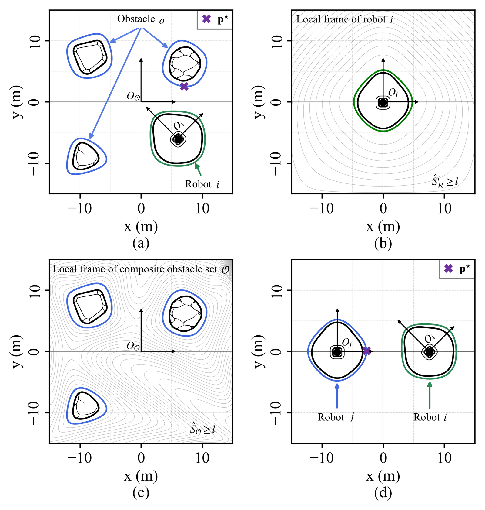
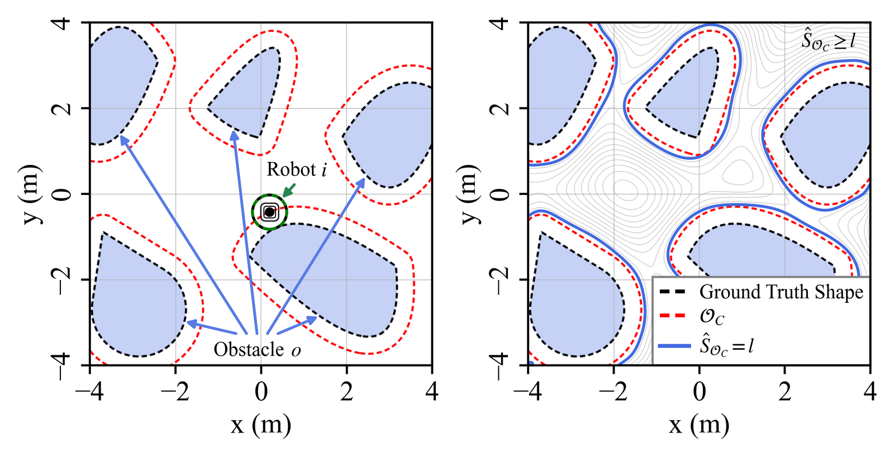
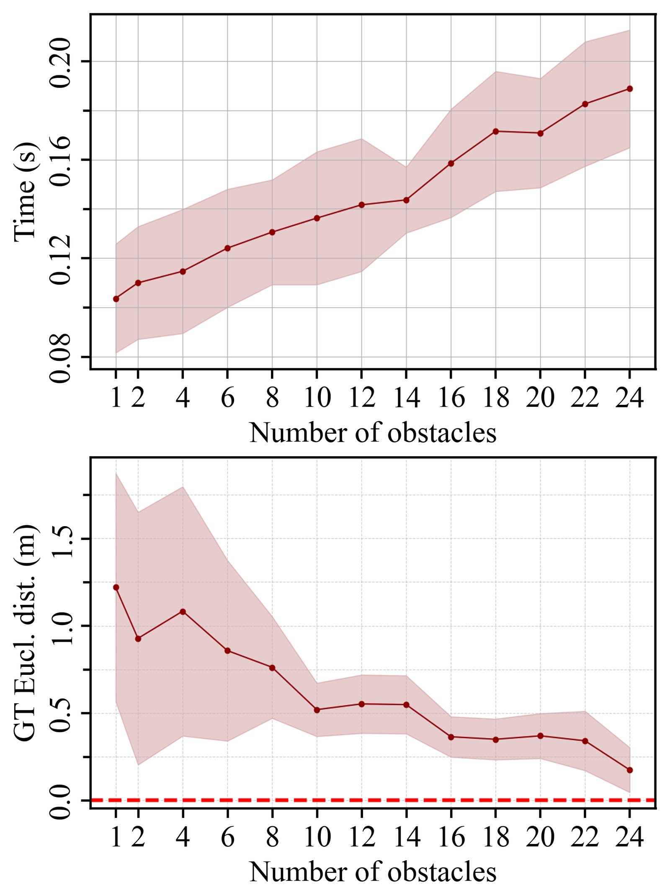

Abstract
Safe navigation often relies on well-defined conditions based on the shape of robots and obstacles, and can be challenging when they have irregular geometries. While Control Barrier Functions (CBFs) offer an efficient mechanism to enforce safe set forward invariance, common shape surrogates (e.g., spheres or super-ellipsoids) are either overly conservative in unstructured scenes or require many local primitives, which inflates constraint counts and degrades real-time performance. In this paper, we introduce a novel geometry-aware Control Barrier Function (CBF) based on Bernstein-Polynomial Signed Distance Fields (BP-SDFs). It provides a unified way to represent the obstacles and robots, so as to represent the barrier function with a unified minimum distance. Benefiting from the differentiability of the Bernstein polynomials, one can easily enforce the control constraints in a closed loop. We validate the method's efficiency and performance to guarantee safety in single-robot navigation and heterogeneous multi-robot collision avoidance via simulations under different environments.
Unified Barrier Function with Bernstein Polynomials

Examples of the level sets for SDF approximation using Bernstein polynomials on robots and obstacles. (The robot and obstacle drawings are illustrations, not the ground-truth shapes used to fit the SDFs.)
Handling Non-Smoothness in Composite Obstacles

C-space (red) of the composite obstacle set inflated by the radius of the robot (green). The right figure shows the SDF of the C-space with a user-defined safety margin level set (blue contours).
Results
Single-Robot Navigation (Composite Obstacles in C-space)
A single robot navigating through an environment populated with multiple obstacles of varying shapes (obstacle layout of Fig. 2 in the paper, shown above).
Safe Navigation of Two Robots under Unicycle Dynamics
Two-robot position-switching under unicycle dynamics. The solid lines and dashed lines represent the approximated shapes by BP-SDFs and ground truth shapes of the robots, respectively.
Safe Navigation of Four Heterogeneous Robots
Collision avoidance among four mobile robots with different smooth convex shapes represented by the respective SDF level sets.
Quantitative Results

Curves show means over five trials. Top: per-time-step computation time. Bottom: minimum ground-truth robot–obstacle distance. Shaded areas denote \(\pm 1\) standard deviation.
BibTeX
@inproceedings{jo2026geometry,
author={Jo, Siwon and Zhang, Yanze and Yang, Yupeng and Luo, Wenhao},
booktitle={2026 IEEE International Conference on Robotics and Automation (ICRA)},
title={Geometry-Aware Control Barrier Functions for Collision Avoidance via Bernstein Polynomial Approximations},
year={2026},
pages={10449--10456},
doi={10.1109/ICRA57385.2026.11696181}
}